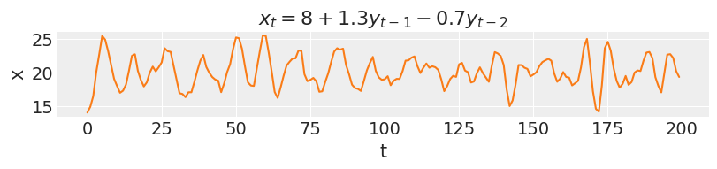
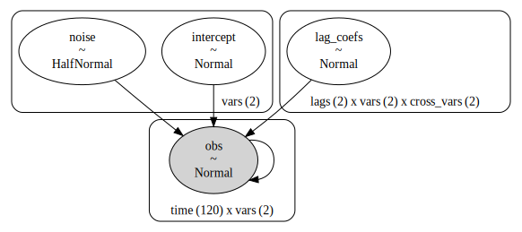

Bayesian Vector Autoregression in PyMC
It's time to let go of your custom Gibbs sampler

A little bit of history
In the seminal 1993 paper "Bayes regression with autoregressive errors: A Gibbs sampling approach", Siddhartha Chib presented to economists the potential of Gibbs sampling in "realistic settings that were previously considered intractable from a Bayesian perspective".
A cursory reading reveals a pattern that is quite characteristic of this early type of work. A time-series statistical model is first described, usually in a handful of equations —1 in this case—, followed by an intricate analysis of how the model joint-probability can be cut into conditionally independent blocks appropriate for Gibbs sampling. In that paper this amounts to no less than 9 equations! If one's model could not be easily cut into sample-able blocks, "auxiliary" variables could always be added as topping, until such cut was found.
As if this was not hard enough, early pioneers had to write their custom Gibbs sampling algorithms by hand, taking care to accommodate the existing computing limitations. Chib's paper makes mention of a powerful 33MHz machine. This process was somewhat alleviated by increasing compute power and by the advent of general purpose MCMC samplers like BUGS and JAGS, and later more powerful Hamiltonian Monte Carlo samplers like those found in Stan and PyMC.
Surprisingly, many are still relying on custom Gibbs sampler algorithms to this day. Perhaps begging their joint probabilities to factor nicely or chasing the auxiliary variables needed for their latest model ideas. Needless to say, with PyMC, we won't be doing any of this!
Back to the present
We will implement a Vector Autoregression (VAR) model, a powerful time series tool, to examine and forecast complex dynamic relationships between variables. VAR models are routinely used by most macroeconomic and policy-making institutions, and have been increasingly adopted in other areas. Some interesting applications include:
| Model subject | Field | Publications |
|---|---|---|
| Individual patient health from digital records | Medicine | A, B |
| Behavioral activitity recognition from sensor data | Machine Classification | C |
| COVID risk interactions across age groups | Epidemiology | D |
| Gene expression regulatory networks | Biology | E |
| Supply and demand of IT devices | Business | F |
| Short-term changes in solar and wind power | Energy | G, H |
| National and city level pollution | Environment | I, J, K |
| Exchange rate and inflation | Economics | L |
| Economic effects of oil price shocks | Economics | M |
To understand how VAR works, it helps to first take a brief look at the simpler Autoregression models.
Autoregression models
Autoregression models (AR) try to predict current observations as a linear combination of the past observations.
Assuming that the most recent $n$ values influence the current observation, the model is described by the following equation:
$$y_t = \text{intercept} + \text{coef}_1 \cdot y_{t-1} + \text{coef}_2 \cdot y_{t-2} + \ldots + \text{coef}_n \cdot y_{t-n} + \epsilon$$
Simulating data from an AR process is quite simple:
import arviz as az import matplotlib.pyplot as plt import numpy as np az.style.use("arviz-darkgrid") seed = sum(map(ord, "PyMC LABS - BVAR")) rng = np.random.default_rng(seed=seed)
def simulate_ar(intercept, coef1, coef2, noise=1, *, warmup=10, steps=200): # We sample some extra warmup steps, to let the AR process stabilize draws = np.zeros(warmup+steps) # Initialize first draws at intercept draws[:2] = intercept for step in range(2, warmup+steps): draws[step] = ( intercept + coef1 * draws[step-1] + coef2 * draws[step-2] + rng.normal(0, noise) ) # Discard the warmup draws return draws[warmup:]
In this first example, new values for $y$ at time $t$ depend only on the intercept and the previous value $y_{t-1}$. This would be an autoregression model of first order or AR(1).
ar1 = simulate_ar(18, -0.8, 0) _, ax = plt.subplots(figsize=(8, 1.8)) ax.plot(ar1) ax.set_xlabel("t") ax.set_ylabel("y") ax.set_title("$y_t = 18 - 0.8y_{t-1}$");
In an AR(2), new values are influenced by the two preceding values.
ar2 = simulate_ar(8, 1.3, -0.7) _, ax = plt.subplots(figsize=(8, 1.8)) ax.plot(ar2, color="C1") ax.set_xlabel("t") ax.set_ylabel("x") ax.set_title("$x_t = 8 + 1.3y_{t-1} - 0.7y_{t-2}$");

As the order of an AR model increases, so does the range of temporal dependencies and the richness of patterns that can be captured. On the other hand, the effect of each coefficient will be harder to determine, as each one plays a proportionally smaller role in the model outcomes.
Vector Autoregression models
Vector autoregression models (VAR) are the multivariate generalization of AR. In a similar vein, they assume that a set of variables, observed at time $t$, can be well predicted by a linear combination of the previous observations of that same set of variables.
Assuming that only the most recent two values have an effect on the current observations, the VAR(2) model is described by:
$$ y_t = \text{intercept}_x + \text{coef}yy_1 \cdot y_{t-1} + \text{coef}yy_2 \cdot y_{t-2} + \text{coef}xy_1 \cdot x_{t-1} + \text{coef}xy_2 \cdot x_{t-2} + \epsilon_y \\ x_t = \text{intercept}_y + \text{coef}yx_1 \cdot y_{t-1} + \text{coef}yx_2 \cdot y_{t-2} + \text{coef}xx_1 \cdot x_{t-1} + \text{coef}xx_2 \cdot x_{t-2} + \epsilon_x $$
This type of model allows for bidirectional effects among variables. The current values of $y$ are not only affected by its past values, but also by the past values of $x$. In addition, the past values of $y$ also affect the current values of $x$. This type of bidirectional effects make VAR models extremely flexible and powerful.
Let us simulate data from a VAR(2) model:
def simulate_var(intercepts, coefs_yy, coefs_xy, coefs_xx, coefs_yx, noises=(1, 1), *, warmup=100, steps=200): draws_y = np.zeros(warmup+steps) draws_x = np.zeros(warmup+steps) draws_y[:2] = intercepts[0] draws_x[:2] = intercepts[1] for step in range(2, warmup+steps): draws_y[step] = ( intercepts[0] + coefs_yy[0] * draws_y[step-1] + coefs_yy[1] * draws_y[step-2] + coefs_xy[0] * draws_x[step-1] + coefs_xy[1] * draws_x[step-2] + rng.normal(0, noises[0]) ) draws_x[step] = ( intercepts[1] + coefs_xx[0] * draws_x[step-1] + coefs_xx[1] * draws_x[step-2] + coefs_yx[0] * draws_y[step-1] + coefs_yx[1] * draws_y[step-2] + rng.normal(0, noises[1]) ) return draws_y[warmup:], draws_x[warmup:]
var_y, var_x = simulate_var( intercepts=(18, 8), coefs_yy=(-0.8, 0), coefs_xy=(0.9, 0), coefs_xx=(1.3, -0.7), coefs_yx=(-0.1, 0.3), ) _, ax = plt.subplots(2, 1, figsize=(8, 4), sharex=True) ax[0].plot(var_y) ax[0].set_title("$y_t = 18 - 0.8y_{t-1} + 0.9x_{t-1}$", fontsize=12) ax[0].set_ylabel("y") ax[1].plot(var_x, color="C1") ax[1].set_title("$x_t = 8 + 1.3x_{t-1} - 0.7x_{t-2} - 0.1y_{t-1} + 0.3y_{t-2}$", fontsize=12) ax[1].set_ylabel("x") ax[1].set_xlabel("t");

Unlike the simulations in the previous section, the two time-series of $y$ and $x$ are now interdependent. Concretely, $y_t$ depends on $x_{t-1}$ and $x_t$ depends on both $y_{t-1}$ and $y_{t-2}$. If the coefficients for the cross-effects were all set to zero, these effects would vanish and we would be observing two independent AR processes just like before.
Going Bayesian with BVAR
Bayesian Vector Autoregression models (BVAR), are the Bayesian interpretation of vanilla VAR models. Parameter uncertainty is explicitly modeled and updated via the Bayesian rule, conditioned on observed data. Like most Bayesian models, there are no hidden assumptions or special conditions under which a statistical model can or cannot be used. What you see write is what you get.
This single letter difference gives a lot of power to BVAR models. Model parameters can be directly constrained by expert information. Relevant information from different datasets can be pooled together via hierarchical modelling. Different assumptions about the extent of lagged effects or noise terms can be easily changed and contrasted. It is also quite simple to extend and combine BVAR with other types of models. As with most Bayesian tools, imagination is the only limitation.
Well, that and compute time...
VAR + PyMC = BVAR
The good news is that if you are using PyMC, your VAR model is necessarily a BVAR model! Let's see how easy it is to do it:
To honor the economic tradition of VARs, we will look at U.S. macroeconomic data for our example, and model GDP growth and Term spread between long- and short-term Treasury bonds. If you have no idea what that means... you are probably not an economist. Neither am I, so do not worry!
This analysis is heavily inspired by this chapter of Introduction to Econometrics with R. Another useful reading can be found in the respective chapter of Forecasting: Principles and Practice.
Per usual, we must start with some scraping and data transformation...
import pandas as pd
# 100% HDI that this link will go stale in the next 6 months = (0, 1) link = "https://www.princeton.edu/~mwatson/Stock-Watson_3u/Students/EE_Datasets/us_macro_quarterly.xlsx" df = pd.read_excel(link, storage_options={'User-Agent': 'Mozilla/5.0'}, index_col=0) df.index = pd.to_datetime( df.index .str.replace(":01", "-01-01") .str.replace(":02", "-04-01") .str.replace(":03", "-07-01") .str.replace(":04", "-10-01") ) df.rename(columns={"GDPC96": "GDP"}, inplace=True) df = df[["GDP", "GS10", "TB3MS"]] # This is an approximation of the annual growth rate df["GDPGrowth"] = 400 * np.log(df["GDP"] / df["GDP"].shift()) # Term spread as the difference between 10-year and 3-month U.S. Treasury bonds df["TSpread"] = df["GS10"] - df["TB3MS"] df = df["1981":] df
| GDP | GS10 | TB3MS | GDPGrowth | TSpread | |
|---|---|---|---|---|---|
| 1981-01-01 | 6628.634 | 12.960000 | 14.390000 | 8.200270 | -1.430000 |
| 1981-04-01 | 6580.199 | 13.750000 | 14.906667 | -2.933505 | -1.156667 |
| 1981-07-01 | 6655.692 | 14.846667 | 15.053333 | 4.562976 | -0.206667 |
| 1981-10-01 | 6578.035 | 14.086667 | 11.750000 | -4.694544 | 2.336667 |
| 1982-01-01 | 6468.003 | 14.293333 | 12.813333 | -6.747465 | 1.480000 |
| ... | ... | ... | ... | ... | ... |
| 2012-10-01 | 15539.628 | 1.706667 | 0.086667 | 0.145281 | 1.620000 |
| 2013-01-01 | 15583.948 | 1.950000 | 0.086667 | 1.139201 | 1.863333 |
| 2013-04-01 | 15679.677 | 1.996667 | 0.050000 | 2.449602 | 1.946667 |
| 2013-07-01 | 15839.347 | 2.710000 | 0.033333 | 4.052698 | 2.676667 |
| 2013-10-01 | 15965.569 | 2.746667 | 0.063333 | 3.174922 | 2.683333 |
132 rows × 5 columns
data = df[["GDPGrowth", "TSpread"]][:-10] test_data = df[["GDPGrowth", "TSpread"]][-10:] data.shape, test_data.shape
((122, 2), (10, 2))
from matplotlib.colors import ColorConverter colors = ("C0", "C1") dark = { "C0": tuple(c * .35 for c in (ColorConverter.to_rgb("C0"))), "C1": tuple(c * .35 for c in (ColorConverter.to_rgb("C1"))), }
_, ax = plt.subplots(2, 1, figsize=(8, 4), sharex=True) ax[0].plot(data["GDPGrowth"], color=dark["C0"], label="train") ax[0].plot(test_data["GDPGrowth"], color="C0", label="test") ax[0].set_ylabel("quarterly change", fontsize=10) ax[0].set_title("GDP growth") ax[1].plot(data["TSpread"], color=dark["C1"], label="train") ax[1].plot(test_data["TSpread"], color="C1", label="test") ax[1].set_ylabel("quarterly change", fontsize=10) ax[1].set_title("Term spread"); for axi in ax: axi.axvline(df.index[-10], ls="--", color="k") axi.legend(loc=(1, 0.5), fontsize=10)
Time to model! We will consider a simple BVAR model of second order.
import pymc as pm
lags = 2 coords={ "lags": reversed(range(-lags, 0)), "vars": ("GDPGrowth", "TSpread"), "cross_vars": ("GDPGrowth", "TSpread"), "time": range(len(data) - lags), } with pm.Model(coords=coords) as BVAR_model: # The first B bit: # Priors for the model intercept, lagged coefficients and noise terms intercept = pm.Normal("intercept", mu=0, sigma=1, dims=("vars",)) lag_coefs = pm.Normal("lag_coefs", mu=0, sigma=1, dims=("lags", "vars", "cross_vars")) noise = pm.HalfNormal("noise", dims=("vars",)) # The VAR bit: # Compute autoregressive expectation for each variable # We convolve the lagged coefficients of each variable with the whole dataset ar_GDPGrowth = pm.math.sum([ pm.math.sum(lag_coefs[i, 0] * data.values[lags-(i+1): -(i+1)], axis=-1) for i in range(lags) ], axis=0) ar_TSpread = pm.math.sum([ pm.math.sum(lag_coefs[i, 1] * data.values[lags-(i+1): -(i+1)], axis=-1) for i in range(lags) ], axis=0) # Stack autoregressive terms and add intercepts mean = intercept + pm.math.stack([ar_GDPGrowth, ar_TSpread], axis=-1) # The second B bit: # For modelling simplicity, we ignore the first observations, where we could # not observe the effects of all the lagged coefficients obs = pm.Normal("obs", mu=mean, sigma=noise, observed=data[lags:], dims=("time", "vars"))
pm.model_to_graphviz(BVAR_model)

with BVAR_model: trace = pm.sample(chains=4, random_seed=rng)
Auto-assigning NUTS sampler...
Initializing NUTS using jitter+adapt_diag...
Multiprocess sampling (4 chains in 4 jobs)
NUTS: [intercept, lag_coefs, noise]
Sampling 4 chains for 1_000 tune and 1_000 draw iterations (4_000 + 4_000 draws total) took 17 seconds.
az.plot_trace(trace);
Shall we do some armchair economics?
Sampling seems to have gone well, let's look at the results:
az.plot_forest(trace, var_names=["intercept", "lag_coefs"], combined=True, textsize=10) plt.axvline(0, color="k", ls="--") plt.title("Posterior 94% HDI");
We can see GDP growth is positively correlated with growth in the two preceding quarters, [-1, GDPGrowth, GDPGrowth] and [-2, GDPGrowth, GDPGrowth], as the posteriors of both coefficients are positive and far from zero.
Term spread is strongly correlated with the term spread of the past quarter [-1, Tspread, Tspread] and slightly negatively correlated with that of two quarters past [-2, TSpread, TSpread].
Now for the interesting part of VAR, we want to look at the cross-effects from one variable to the other. The model suggests past Term spreads may be strongly related to GDP growth, with [-1, GDPGrowth, TSpread], [-2, GDPGrowth, TSpread] having an absolute large mean. However, the uncertainty around these parameters is rather large.
In contrast, there seems to be almost no effect in the other direction, from GDP growth to term spread [-1, TSpread, GDPGrowth], [-2, TSpread, GDPGrowth], with posteriors of the coefficients confidently close to zero.
Easier to forecast
Looking at numbers can only be so useful. What do they imply? Let's build a helper function to forecast future GDP growth and Term spread, according to our freshly inferred posterior parameters.
# Function that takes a single draw of parameters and forecasts n steps def _forecast(intercept, lag_coefs, noise, forecast=10): len_data = len(data) new_draws = np.zeros((data.shape[0]+forecast, data.shape[1])) # Fill the new array with the observed data new_draws[:len_data] = data[:] for i in range(forecast): ar_GDPGrowth = np.sum(lag_coefs[:, 0] * new_draws[len_data+i-lags: len_data+i]) ar_TSpread = np.sum(lag_coefs[:, 1] * new_draws[len_data+i-lags: len_data+i]) mean = intercept + np.stack([ar_GDPGrowth, ar_TSpread]) new_draws[len_data+i] = rng.normal(mean, noise) # Replace all observed data with nan, so they don't show when we plot it new_draws[:-forecast-1] = np.nan return new_draws # Vectorized forecast function to handle multiple parameter draws forecast = np.vectorize( _forecast, signature=("(v),(l,v,v),(v)->(o,v)"), excluded=("forecast",), )
# Take a random subset of 100 draws from the posterior draws = rng.integers(4000, size=100) post = trace.posterior.stack(sample=("chain", "draw")) intercept_draws = post["intercept"].values.T[draws] lag_coefs_draws = post["lag_coefs"].values.T[draws].T lag_coefs_draws = np.moveaxis(lag_coefs_draws, -1, 0) noise_draws = post["noise"].values.T[draws] intercept_draws.shape, lag_coefs_draws.shape, noise_draws.shape
((100, 2), (100, 2, 2, 2), (100, 2))
# Forecast 10 quarters into the future ppc_draws = forecast(intercept_draws, lag_coefs_draws, noise_draws, forecast=10) ppc_draws = np.swapaxes(ppc_draws, 0, 1)
_, ax = plt.subplots(2, 1, sharex=True) ax[0].set_title("GDP Growth (rescaled)") ax[0].plot(df.index, ppc_draws[..., 0], color="C0", alpha=0.05) ax[0].plot(df["GDPGrowth"], color="k", label="observed") ax[0].plot([], color="C0", label="forecast") ax[1].set_title("Term spread") ax[1].plot(df.index, ppc_draws[..., 1], color="C1", alpha=0.05) ax[1].plot(df["TSpread"], color="k", label="observed") ax[1].plot([], color="C1", label="forecast") for axi in ax: axi.axvline(test_data.index[0], ls="--", color="k") axi.legend(fontsize=10, loc=(1, .4)) axi.set_ylabel("quartely change", fontsize=12)
That will be all for today. We hope you enjoyed the basics of Bayesian Vector Autoregression in PyMC.
Work with PyMC Labs
If you are interested in seeing what we at PyMC Labs can do for you, then please email info@pymc-labs.com. We work with companies at a variety of scales and with varying levels of existing modeling capacity. We also run corporate workshop training events and can provide sessions ranging from introduction to Bayes to more advanced topics.